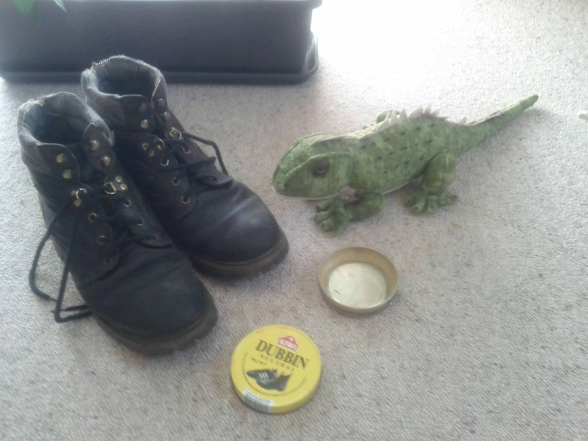

Friday, February the 24th, 2012
back to: title, date or indexes
Further to my notes on the Dubbin Club, far away in New Zealand Glyn Webster provides this splendid photographic evidence of serious dubbin application.
